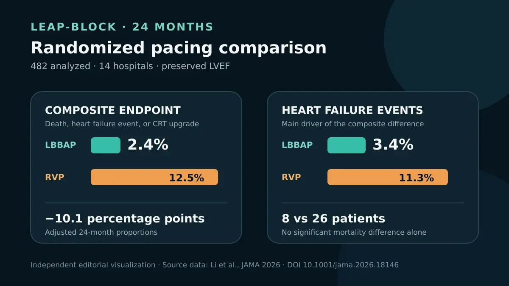

داده و طراحی · دادهها: Li و همکاران، JAMA؛ طراحی مستقل: وبسایت دکتر امید خیرخواهگامگذاری ناحیه شاخه چپ در بلوک قلبی: رویداد مرکب کمتر شد، اما پاسخ درباره مرگ روشن نیست
در کارآزمایی تصادفی LEAP-Block با ۴۸۲ بیمار و پیگیری ۲۴ماهه، پیامد مرکب مرگ، رویداد نارسایی قلبی یا ارتقا به گامگذاری دوبطنی با گامگذاری ناحیه شاخه چپ کمتر از گامگذاری بطن راست بود. تفاوت عمدتاً از رویدادهای نارسایی قلبی آمد؛ مرگ بهتنهایی تفاوت معناداری نداشت.
کارآزمایی تصادفی کنترلشده برتریسنج، آیندهنگر و چندمرکزی در ۱۴ بیمارستان چین؛ ۴۹۹ بیمار تصادفیسازی و ۴۸۲ نفر در تحلیل اصلی، ارزیابی کور پیامد و پیگیری ۲۴ماهه. قدرت ناکافی برای اجزای منفرد پیامد مرکب، حذفهای اندک پس از تصادفیسازی و محدودیت تعمیم به لیدها و جمعیتهای دیگر
مطالعهٔ کامل ۵ دقیقه مطالعه